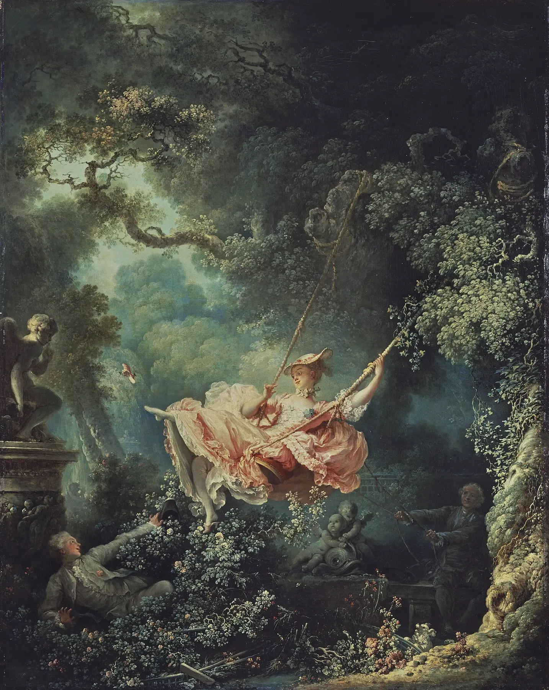
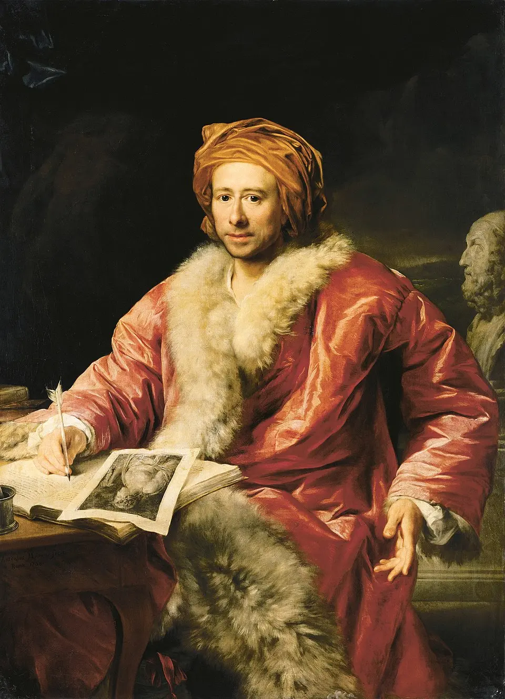
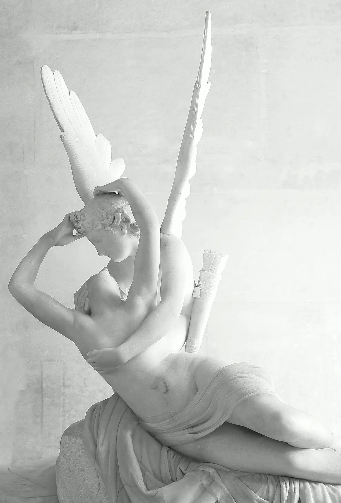
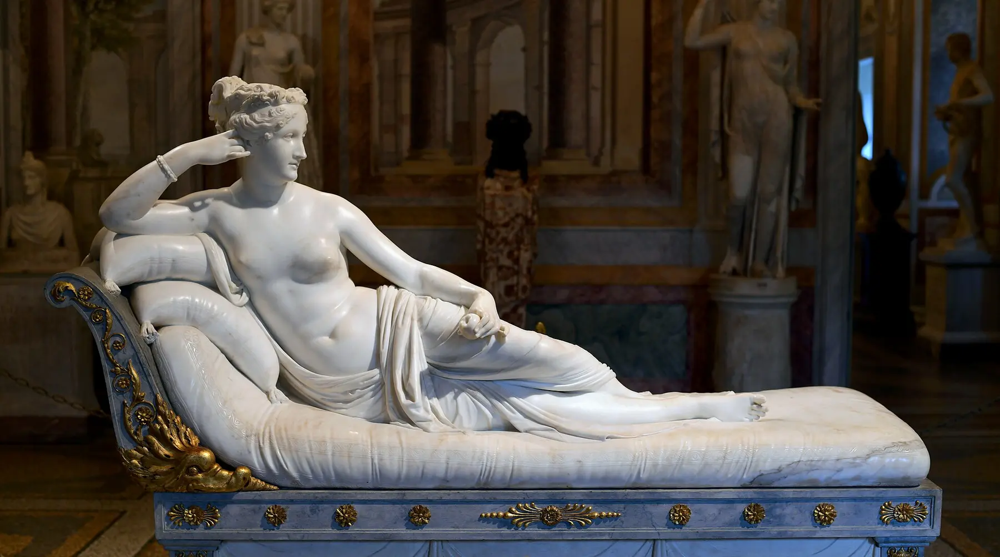
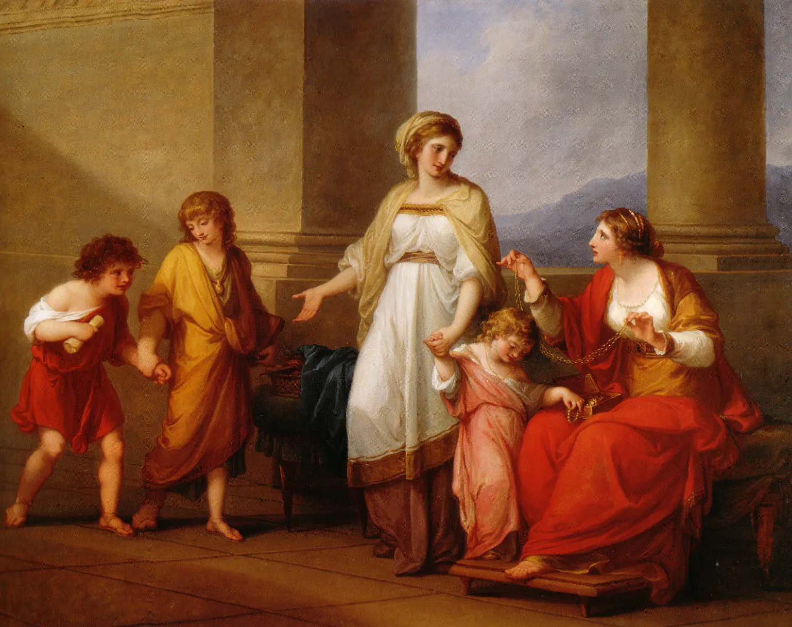
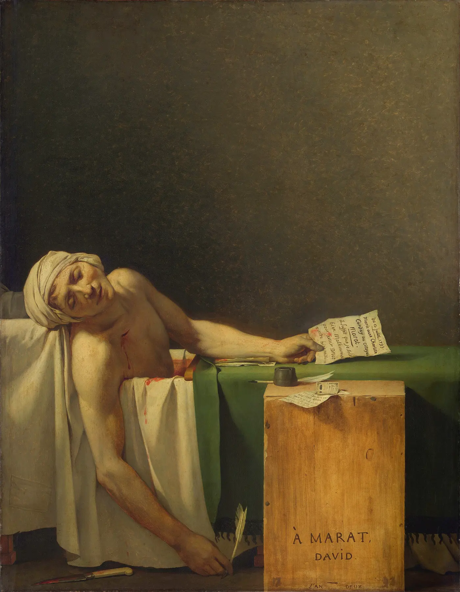
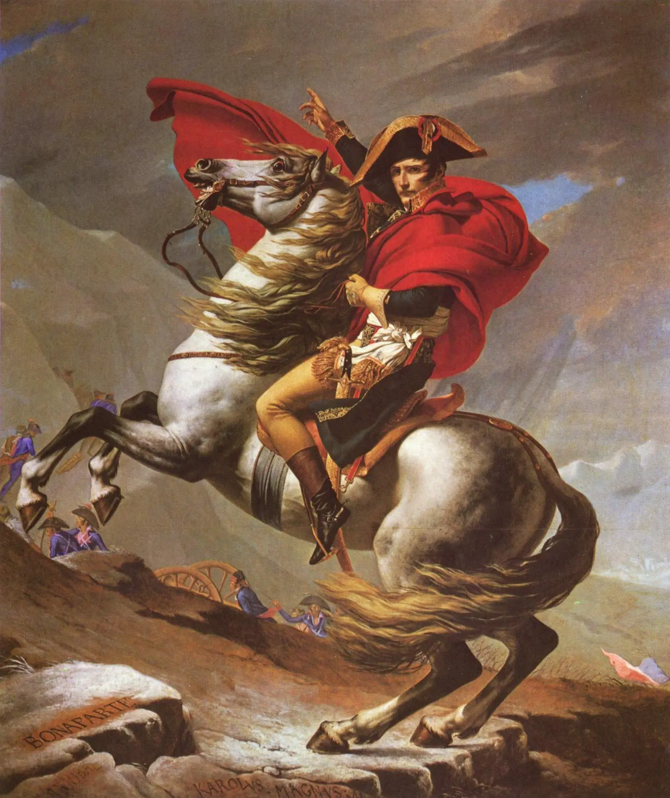

La tua sintesi
Completa almeno un laboratorio e il secondo taccuino per generare una sintesi personale.

11 · Neoclassicismo — prima di sapere
Non leggere ancora titolo e autore. Guarda il gesto. Qui l’immagine non chiede solo di provare emozione: chiede di prendere posizione.
Il mondo precedente: piacere, luce, persuasione
Dal modulo 10
Il Neoclassicismo non nasce come semplice “ritorno all’antico”. Nasce dentro una domanda più severa: se l’immagine può muovere gli affetti, può anche educare? Può formare un cittadino?

| Categoria | Rococò | Neoclassicismo |
|---|---|---|
| Spazio | Giardino privato, schermato, mobile. | Architettura frontale, misurata, pubblica. |
| Linea | Curve, fronde, diagonali leggere. | Assi netti, braccia tese, archi ordinatori. |
| Colore | Seduzione cromatica, rosa e verde vaporosi. | Toni contenuti, contrasto fra carne, pietra e rosso. |
| Gesto | Gioco, allusione, desiderio. | Giuramento, sacrificio, dovere. |
| Pubblico implicito | Élite aristocratica e conversazione privata. | Spettatore chiamato a giudicare un modello morale. |
Il Settecento reinventa l’antico
Cronologia e rete
Archeologia, Grand Tour, accademie, mercato, musei, filosofia illuministica e rivoluzioni costruiscono un nuovo uso dell’antico. Non una causa unica, ma una rete.
Seleziona un nodo. L’antico non viene trovato “puro”: viene studiato, venduto, copiato, insegnato, esposto, usato politicamente.
Che cosa significa “neoclassico”?
Una parola, tre prospettive
Winckelmann cerca una bellezza regolata e attribuisce all’arte greca una grandezza morale. Ma conosce molte opere attraverso copie romane, e l’antichità che immagina non coincide perfettamente con la Grecia storica.

“Nobile semplicità e quieta grandezza” non significa freddezza. Significa dominio della passione attraverso la forma. Ma quel dominio è anche una scelta culturale moderna, non una fotografia dell’antico.
Laboratorio della composizione morale
David · Il giuramento degli Orazi
Attiva gli strati: archi, gruppi, linee, braccia, spade, sguardi e zone di luce non decorano la scena. Ordinano il conflitto fra affetti familiari e dovere civico.
Equivalente testuale: nessuna sovrapposizione attiva.
La linea disciplina il corpo
Simulazione dichiarata
Questa non è un’opera alterata: è un modello didattico autonomo. Cambia modalità e osserva come linea, volume, colore, chiaroscuro e postura orientino il giudizio.
Contorno netto: il gesto è separato dallo sfondo e diventa leggibile.
Simulazione didattica, non manipolazione di un’opera autentica.
Il corpo ideale
Antonio Canova
Canova lavora attraverso disegni, modelli in creta, gessi, traduzione in marmo e finitura di superficie. L’ideale nasce da una bottega concreta e da un pubblico che sa riconoscere mito, corpo e status.


Equivalente testuale: seleziona un aspetto della scultura.
Chi può rappresentare la virtù?
Angelica Kauffman
Le immagini attribuiscono alle donne un ruolo essenziale: educare, custodire, sacrificare, formare cittadini. Ma questo riconoscimento morale non coincide con pieno accesso alla sfera politica.

La Rivoluzione costruisce le proprie immagini
David · La morte di Marat
David elimina quasi tutto: fondo, oggetti inutili, rumore della stanza, assassina. Restano corpo, ferita, lettera, cassa, firma. La morte diventa lutto pubblico e culto civile.

Equivalente testuale: nessuno strato attivo.
Dalla virtù al potere
Repubblica, Impero, mito
David non è solo “il pittore della Rivoluzione”. Attraversa monarchia, Repubblica, Terrore e Impero. La forma chiara può educare, commemorare, ma anche costruire obbedienza e mito politico.


Equivalente testuale: seleziona un simbolo o una strategia.
Museo, accademia e cittadino
Pubblico moderno
Salon, accademie, critica, incisioni, Grand Tour, musei e requisizioni napoleoniche trasformano l’opera in bene pubblico, oggetto di studio, merce, trofeo e patrimonio conteso.
Laboratorio conclusivo: quale virtù?
Quattro opere · una categoria per volta
Confronta Barocco, Rococò, David e Goya. La domanda non è quale sia “migliore”, ma quale idea di corpo, pubblico, potere e realtà rende possibile.
Ritorno all’immagine
La stessa opera · un altro sguardo
Riguarda Il giuramento degli Orazi senza sovrapposizioni. Che cosa riesci a vedere ora che all’inizio restava implicito?
Non hai ancora scritto un’annotazione.
Completa almeno un laboratorio e il secondo taccuino per generare una sintesi personale.
Verifica · 12 nuclei, 12 recuperi
Ogni errore apre una microlezione specifica e blocca il passaggio finché il recupero non viene superato. Lo stato resta salvato anche dopo la ricarica.
Domanda 1 di 12
Soglia · verso il Romanticismo
Il Neoclassicismo vuole educare lo sguardo: disciplina, sacrificio, cittadinanza, bellezza universale. Ma rivoluzione, violenza, desiderio, esclusione, propaganda, natura e infinito aprono crepe che il Romanticismo renderà impossibili da ignorare.
Modulo successivo12 — L’infinito inquieta la ragioneRomanticismo · Sublime, individuo, storiaRicerca e trasparenza
Le interpretazioni sono costruite su musei, istituzioni culturali e risorse storico-artistiche attendibili. Wikimedia Commons è usata come deposito tecnico delle riproduzioni e delle licenze quando necessario.
Musée du Louvre · dal palazzo al museo
Musée du Louvre · L’incoronazione di Napoleone
Musée du Louvre · Il giuramento degli Orazi
Royal Museums of Fine Arts Belgium · Marat assassiné
The Wallace Collection · The Swing
Virginia Museum of Fine Arts · Kauffman, Cornelia
Musée du Louvre · Canova, Amore e Psiche
Galleria Borghese · Paolina Borghese
| File | Opera | Fonte e licenza |
|---|---|---|
| orazi.webp | Jacques-Louis David, Il giuramento degli Orazi, 1784, Louvre | Commons da opera in pubblico dominio; fonte interpretativa Louvre. |
| fragonard-altalena.webp | Jean-Honoré Fragonard, L’altalena, 1767, Wallace Collection | Commons pubblico dominio; scheda Wallace Collection. |
| winckelmann.webp | Anton von Maron, Johann Joachim Winckelmann, 1768 circa | Commons pubblico dominio. |
| canova-amore-psiche.webp | Antonio Canova, Amore e Psiche, 1787–1793, Louvre | Commons, pubblico dominio/opera antica; fonte Louvre. |
| paolina-borghese.webp | Antonio Canova, Paolina Borghese come Venere vincitrice, 1805–1808, Galleria Borghese | Commons, pubblico dominio per l’opera; fonte Galleria Borghese. |
| kauffman-cornelia.webp | Angelica Kauffman, Cornelia..., circa 1785, VMFA | Commons pubblico dominio; fonte VMFA. |
| morte-marat.webp | Jacques-Louis David, La morte di Marat, 1793, Bruxelles | Commons pubblico dominio; fonte Royal Museums of Fine Arts Belgium. |
| napoleone-gran-san-bernardo.webp | Jacques-Louis David, Bonaparte valica il Gran San Bernardo, 1801, Vienna | Commons pubblico dominio. |
| incoronazione-napoleone.webp | Jacques-Louis David, L’incoronazione di Napoleone, 1805–1807, Louvre | Commons pubblico dominio; fonte Louvre. |
| goya-3-maggio.webp | Francisco Goya, Il 3 maggio 1808, 1814, Prado | Commons pubblico dominio; fonte Prado. |
| caravaggio-vocazione.webp | Caravaggio, Vocazione di san Matteo, 1599–1600, Roma | Copia locale dal modulo 09; pubblico dominio. |